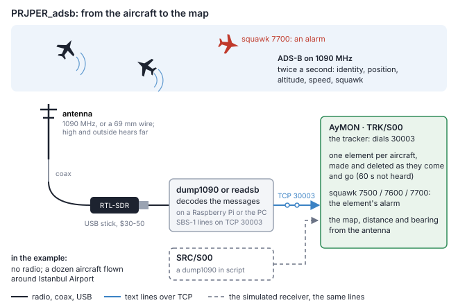

The sky north up, range rings, trails of the last minute
below 10 000 ft
10 000 - 25 000 ft
above 25 000 ft
emergency squawk
Now
--
aircraft being heard
count(id('SKY')/ac)- lines / s
- --
- lines read
- --
- not SBS-1
- --
- aircraft seen
- --
- farthest
- -- km
- forgotten after
- -- s
- receiver
- --
Selected
click an aircraft or a row
Aircraft nearest first - one row per <ac> element under SKY
| callsign | ICAO | FL | kt | trk | ft/min | km | brg | squawk | msgs | age s |
|---|---|---|---|---|---|---|---|---|---|---|
| waiting for the tracker… | ||||||||||
From the aircraft to the map - a sketch of a real receiver and of what the example puts in its place; click for full size
